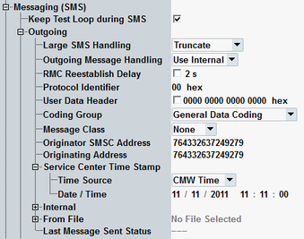

This section configures the main parameters for the transmission of outgoing mobile terminated short messages.

Defines the handling of an SMS message exceeding 160 characters.
"Truncate": SMS truncated to 160 characters, the rest is discarded
"Multiple SMS": up to five concatenated SMS messages consisting in sum of up to 800 characters
Remote command:Defines, which source is used as outgoing message.
- "Use Internal": use the message configured as "Internal".
- "From File": use the file specified in the section "From File".
Defines the time between sending of an SMS message and re-establishment of the RMC connection.
This parameter is relevant if you send an SMS message in parallel to an established RMC connection and parameter "Keep Test Loop during SMS" is disabled. In that case, the RMC connection is released (RRC connection is kept), the SMS message is sent and then the RMC connection is re-established after the defined delay time.
The delay can also be deactivated completely, so that the RMC connection is re-established immediately after the SMS message has been sent.
Remote command:Defines the SMS protocol ID in accordance with 3GPP TS 23.040, section 9.2.3.9.
Remote command:To add a header to the TP user data field, enable the checkbox and configure the header via the hex value. The structure of the user data header is defined in 3GPP TS 23.040, section 9.2.3.24.
- Information element identifier (IEI, one octet)
Currently supported values: #H05, #H70 to #H7F - Length of information element (IEIDL, one octet)
- Information element data (IED, 0 to n octets)
The signaling application sets the TP-UDHI automatically, according to the checkbox. With enabled checkbox, it sends the hex value to the UE and uses the correct number of fill bits in the header. It evaluates the IEIa and applies the correct message concatenation and header repetition.
Remote command:Defines how to interpret SMS signaling information. General message coding and data coding / message class coding groups are defined in 3GPP TS 23.038, section 4.
Remote command:Specifies the default savings of the SMS message as defined in 3GPP TS 23.038. The default settings are overridden by selecting the routing manually at the UE.
Remote command:Specifies the phone number of the SMS center.
Remote command:Specifies the phone number of the SMS originating UE.
Remote command:Configures date and time information used by service center time stamp.
Option R&S CMW-KS410 is required.
- "CMW Time"
Selects the current CMW (Windows) date and time as a source. The Windows settings determine the service center time stamp date and time. - "Date / Time"
Selects the parameters "Date / Time" as a source.
Defines the service center time stamp date and time to be used if "Time Source" is set to "Date / Time".
Remote command:The parameters of "Internal" and "From File" section are described in "Outgoing SMS: Message Creation".
Indicates, whether the last message was sent successfully or not.
Remote command: